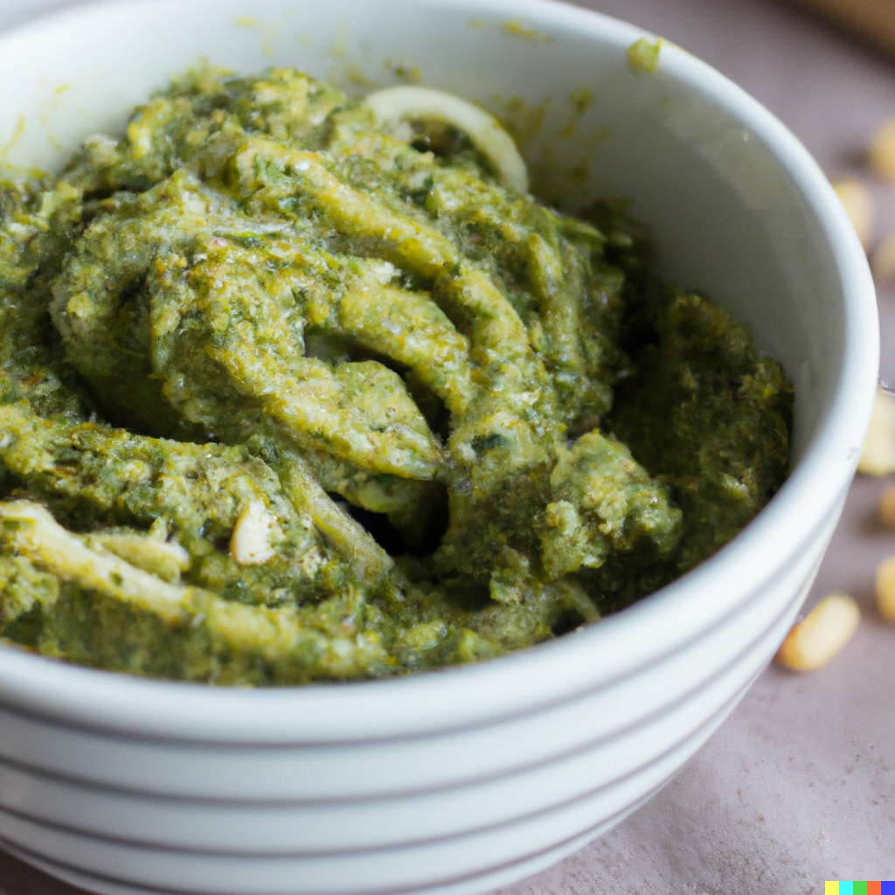

Pesto Pasta

Description
Pesto pasta is a quick and easy dish that is perfect for a weeknight dinner or a summer lunch. The dish features al dente pasta coated in a flavorful and fresh basil pesto sauce. The pesto sauce is made with a handful of simple ingredients that come together to create a vibrant and aromatic flavor that pairs perfectly with the pasta. With just a few steps and some basic cooking skills, you can have a delicious and satisfying meal in no time.
Ingredients
- 8 oz of pasta (your choice of shape)
- 2 cups of fresh basil leaves, packed
- 1/2 cup of grated Parmesan cheese
- 1/2 cup of pine nuts
- 2 garlic cloves
- 1/2 cup of olive oil
Instructions
- Cook the pasta according to package instructions until al dente. Reserve 1/2 cup of the pasta water before draining.
- In a food processor, combine the basil, Parmesan cheese, pine nuts, and garlic. Pulse until finely chopped.
- With the food processor running, slowly pour in the olive oil until the mixture is smooth.
- Season the pesto with salt and pepper to taste.
- In a large bowl, toss the cooked pasta with the pesto sauce, adding reserved pasta water as needed to thin the sauce.
- Bring the mixture to a boil, then reduce the heat to low and simmer for 30 minutes.
- Serve hot, garnished with extra Parmesan cheese and chopped basil, if desired. Enjoy!